R pour les cartographes : le package cartography
R pour les cartographes : le package cartography
R
R est un langage et un environnement permettant de réaliser une variété de traitements statistiques et de représentations graphiques.
R est un logiciel libre sous license GNU General Public License.
R est multiplateforme (GNU/Linux, Windows, OS X…).

Environment
R Base : R
Les packages : The Comprehensive R Archive Network (CRAN)
Environnement de développement intégré (IDE) : RStudio
RStudio : sa vie, son oeuvre, ses ressources
Popularité et vitalité
Plus de 131 990 questions taggées R sur StackOverflow
Plus de 8 250 packages
Langage préféré des data scientists (LinkedIn)
Dépots les plus forkés sur GitHub
5 updates in 2015
174 Local R User Groups, dont 6 en France
Les fonctionnalités spatiales
Trois packages sont incontournables.
Le package rgdal, import/export d’objets spatiaux et gestion des projections cartographiques
rgdal est une interface entre R et les librairies GDAL (Geospatial Data Abstraction Library) et PROJ4.
Import du shapefile des régions européennes (NUTS3) :
library("rgdal")
nuts3 <- readOGR(dsn = "data", layer = "nuts3", verbose = TRUE)OGR data source with driver: ESRI Shapefile
Source: "data", layer: "nuts3"
with 1448 features
It has 7 fieldsLe package sp, manipulation et affichage d’objets spatiaux
sp fournit des classes et des methodes pour les données spatiales dans R.
Affichage des NUTS3 :
library("sp")
class(nuts3)[1] "SpatialPolygonsDataFrame"
attr(,"package")
[1] "sp"nuts3@proj4stringCRS arguments:
+proj=laea +lat_0=52 +lon_0=10 +x_0=4321000 +y_0=3210000
+ellps=GRS80 +units=m +no_defs nuts3@bbox min max
x 2641758 7313157
y 1427614 5411284head(nuts3@data) id birth_2008 death_2008 gdppps1999 gdppps2008 pop1999 pop2008
0 AT111 272 445 509 641 39148.91 37452
1 AT112 1195 1480 2262 3272 137469.46 146383
2 AT113 748 1142 1368 1783 100113.63 97350
3 AT121 2480 2119 4091 5807 238591.26 241083
4 AT122 2266 2577 4130 5774 244959.00 251838
5 AT123 1363 1392 3098 4504 144269.11 147468plot(nuts3)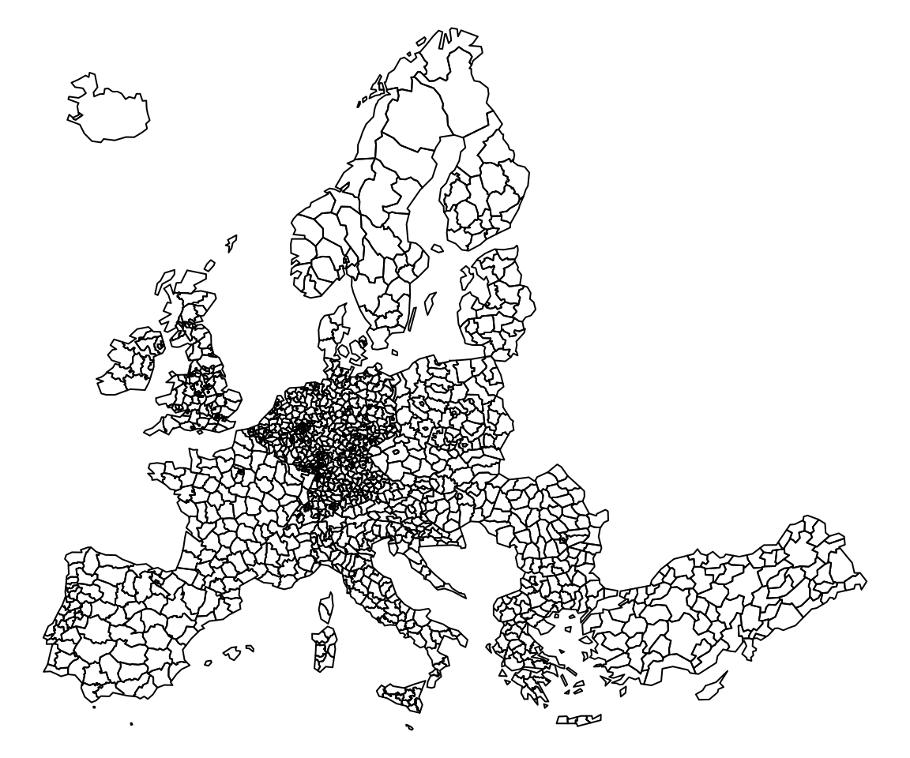
plot(nuts3, col = "#DAE3E6", border = "#8A0641", lwd = 0.5)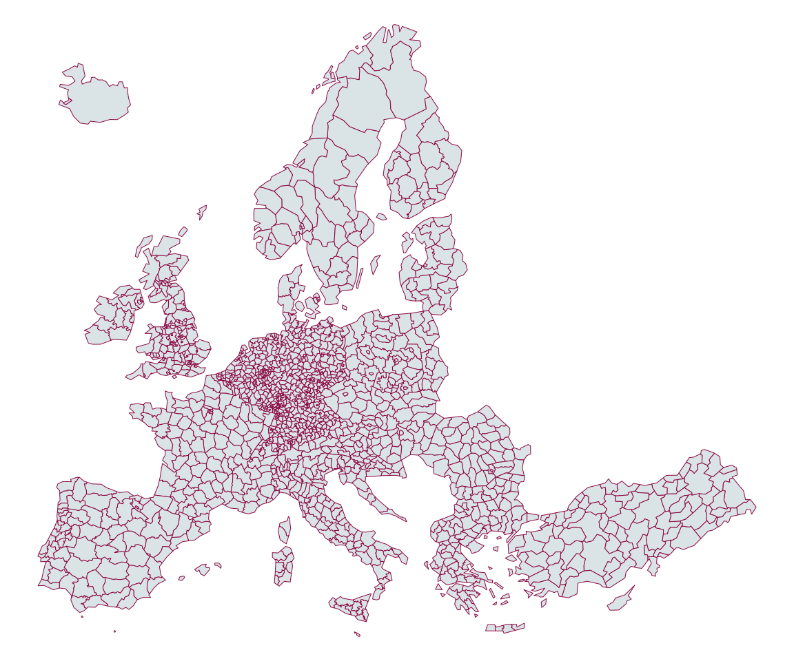
Le package rgeos, géotraitements
rgeos donne accès à la librairie d’opérations spatiales GEOS (Geometry Engine - Open Source) qui permet notamment d’effectuer les géotraitements suivants :
- Area / Perimeter
- Distances
- Buffer
- Overlap / intersect / difference
- Contains / within
- Union
- Dissolve
- …
Agrégation des polygones / dissolve
library("rgeos")
europe <- gUnaryUnion(spgeom = nuts3)
plot(nuts3, lwd = 0.5)
plot(europe, lwd = 2, border = "red", add = T)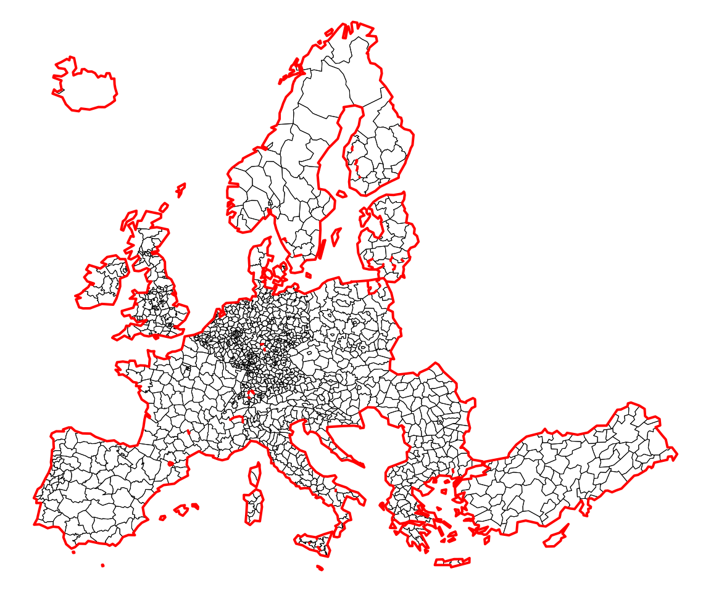
Création de zones tampons / buffer
library("rgeos")
europeBuffer <- gBuffer(spgeom = europe, width = 50000)
plot(europe, col = "#92C5D6")
plot(europeBuffer, add = T, border = "red")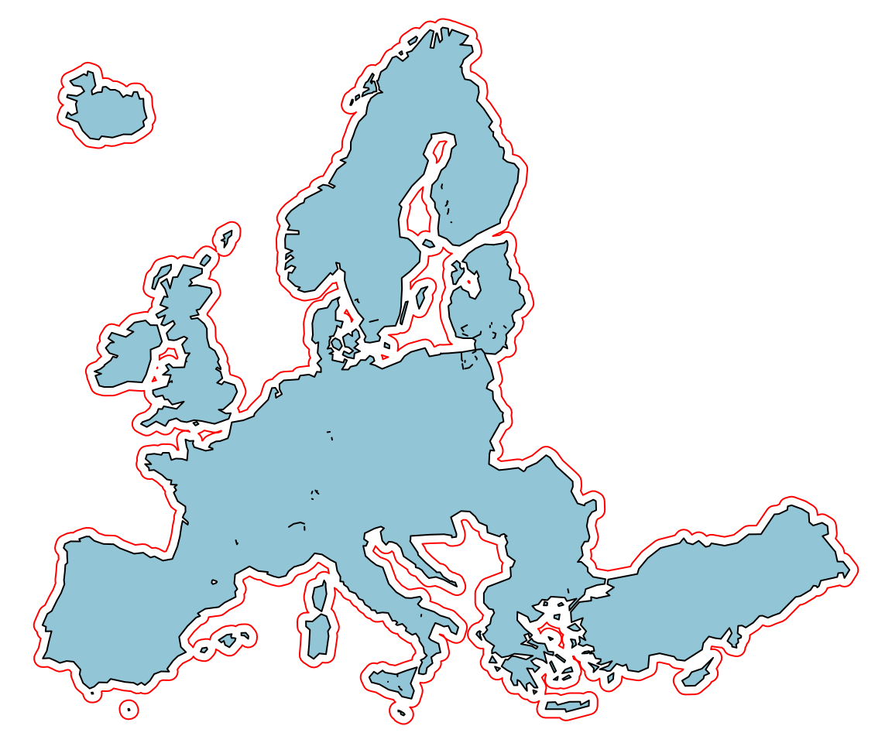
Mais aussi…
Des liens sont possibles avec des SIG ou des bases de données spatiales :
- GRASS (
spgrass6,rgrass7)
- QGIS (via Processing, anciennement sextante)
- ArcGis (
RPyGeovia Python)
- PostGis / PostGreSQl (
RPostgreSQL)
Le package cartography
Conçu comme une boite à outil dédiée à la cartographie thématique, le package cartography est développé au sein de l’UMS RIATE (CNRS, CGET, Université Paris Diderot) par Nicolas Lambert et Timothée Giraud.
Installation
La version stable est sur le CRAN.
install.packages("cartography")La version de développement est hébergée sur GitHub.
require(devtools)
devtools::install_github("Groupe-ElementR/cartography")Vous pouvez nous faire remonter d’éventuels bugs ici.
Les données
Les exemples utilisent les jeux de données fournis avec le package. Ces données portent sur les maillages régionaux européens NUTS.
# Chargement de la librairie
library(cartography)
# Import de données dans la session
data(nuts2006)
ls() [1] "coasts.spdf" "countries.spdf" "frame.spdf" "graticule.spdf"
[5] "nuts0.df" "nuts0.spdf" "nuts1.df" "nuts1.spdf"
[9] "nuts2.df" "nuts2.spdf" "nuts3.df" "nuts3.spdf"
[13] "twincities" "world.spdf" Les objets terminant par “.spdf”" sont des objets spatiaux et ceux terminant par “.df” sont des data frames.
Carte Choroplethes
# Calcul du taux de croissance annuel moyen
nuts2.df$cagr <- 100 * (((nuts2.df$pop2008/nuts2.df$pop1999)^(1/9)) - 1)
# Cartographie
choroLayer(spdf = nuts2.spdf, df = nuts2.df, var = "cagr")
title("Taux de croissance en Europe")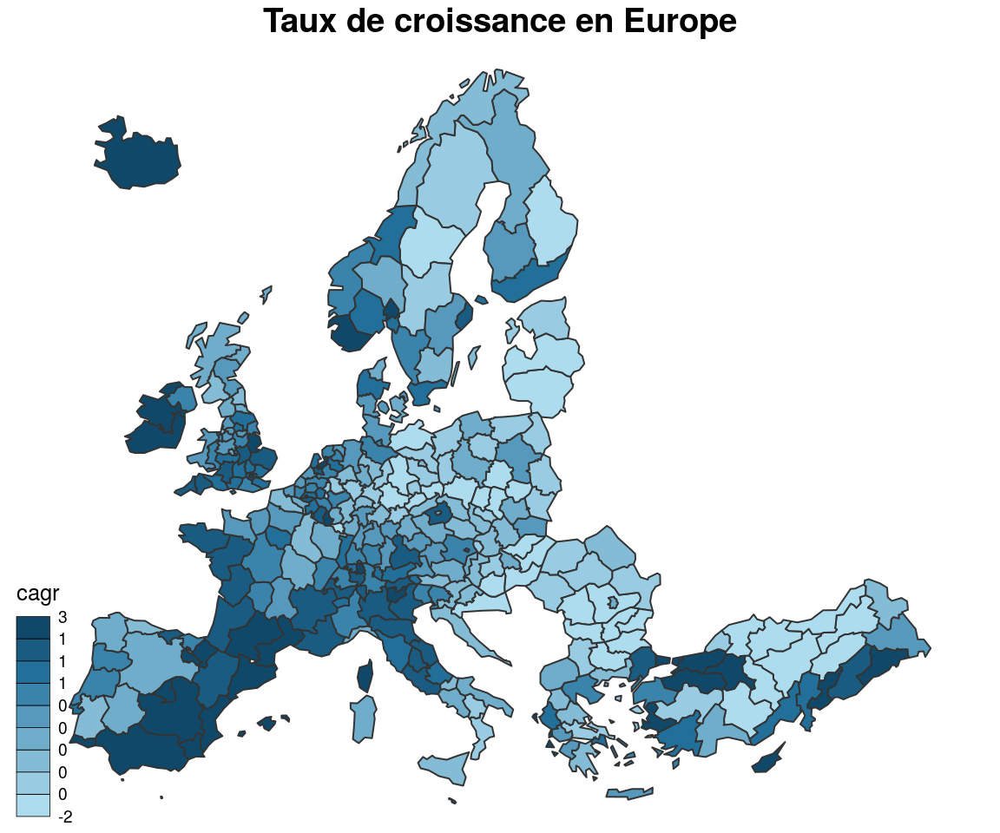
Après ce premier jet, il est ensuite possible de paramétrer très finement la carte : palette de couleurs, discrétisation, légende, couches d’habillage…
# Construire une palette de couleurs
cols <- carto.pal(pal1 = "green.pal", n1 = 2,
pal2 = "red.pal", n2 = 4)
# Affichage de couches d'habillage
plot(nuts0.spdf, border = NA, col = NA, bg = "#A6CAE0")
plot(world.spdf, col = "#E3DEBF", border=NA, add=TRUE)
# Cartographie du taux de croissance annuel moyen
choroLayer(spdf = nuts2.spdf, df = nuts2.df, var = "cagr",#
breaks = c(-2.43,-1.0,0.0,0.5,1.0,2.0,3.1),
col = cols,
border = "grey40",
lwd = 0.5,
legend.pos = "right",
legend.title.txt = "taux de croissance\nannuel moyen",
legend.values.rnd = 2,
add = TRUE)
# Affichage de couches d'habillage
plot(nuts0.spdf,border = "grey20", lwd=0.75, add=TRUE)
# Ajout des titres, légende, sources, etc.
layoutLayer(title = "Taux de croissance en Europe",
author = "cartography",
sources = "Eurostat, 2008", frame = TRUE, col = NA,
scale = NULL,coltitle = "black",
south = TRUE) 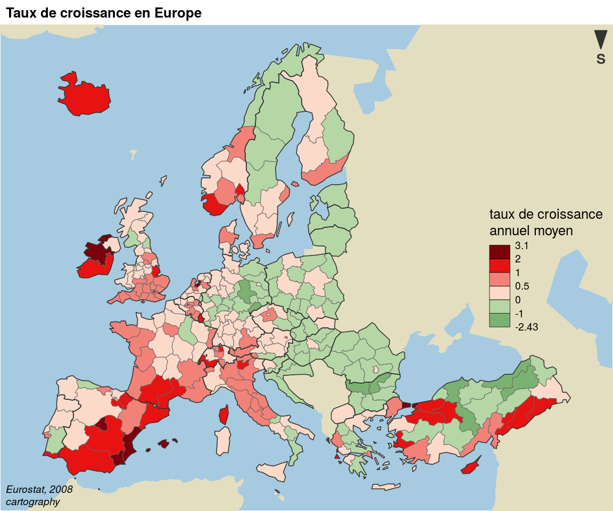
Cartes en symboles proportionnels
# Affichage de couches d'habillage
plot(nuts0.spdf, border = NA, col = NA, bg = "#A6CAE0")
plot(world.spdf, col = "#E3DEBF", border=NA, add=TRUE)
plot(nuts0.spdf, col = "#D1914D",border = "grey80", add=TRUE)
# Cartographie de la population des pays en cercles proportionnels
propSymbolsLayer(spdf = nuts0.spdf, df = nuts0.df,#
var = "pop2008",
symbols = "circle", col = "#920000",
legend.pos = "right",
legend.title.txt = "Total\npopulation (2008)",
legend.style = "c")
# Ajout des titres, légende, sources, etc.
layoutLayer(title = "Countries Population in Europe",
author = "cartography",
sources = "Eurostat, 2008",
scale = NULL,
south = TRUE)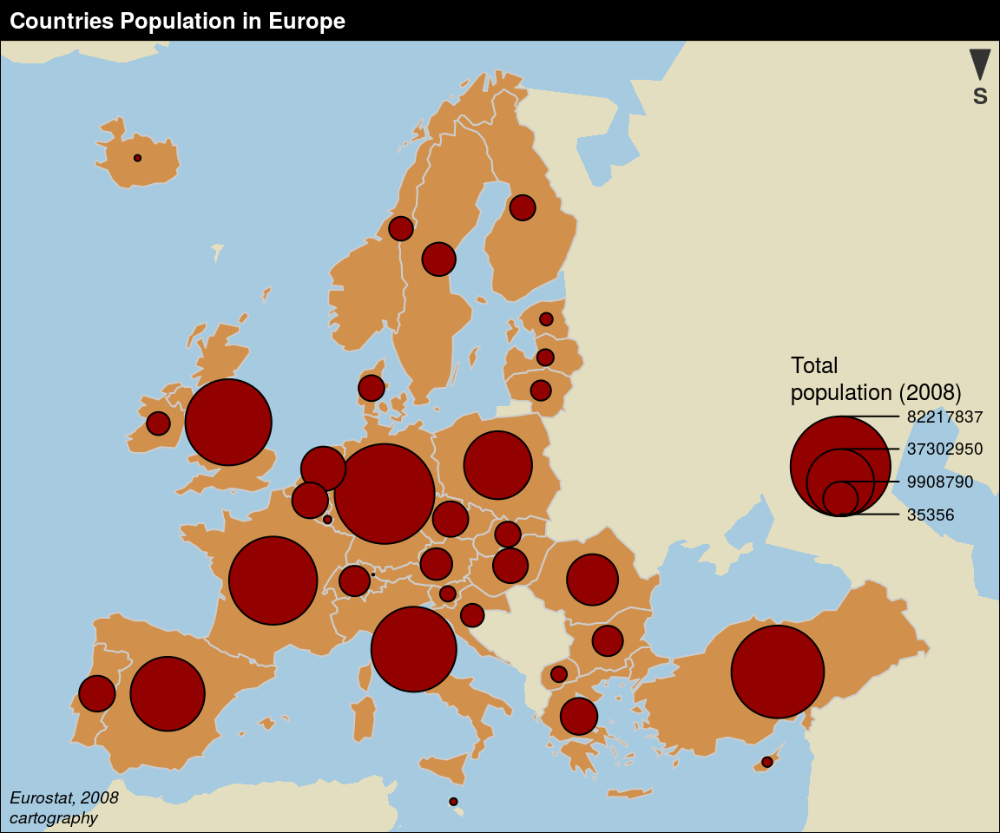
Cartes de flux
Il s’agit de représenter des données, agrégées à un niveau régional, sur les jumelages entre villes.
# Données sur les jumelages
head(twincities) i j fij
1 DE14 AT11 1
2 DE21 AT11 1
3 DE23 AT11 1
4 DE26 AT11 2
5 DE91 AT11 1
6 DEB3 AT11 1# Creation d'une couche de liens
twincities.spdf <- getLinkLayer(spdf = nuts2.spdf, df = twincities)
# Affichage des liens créés
plot(twincities.spdf, lwd = 0.2)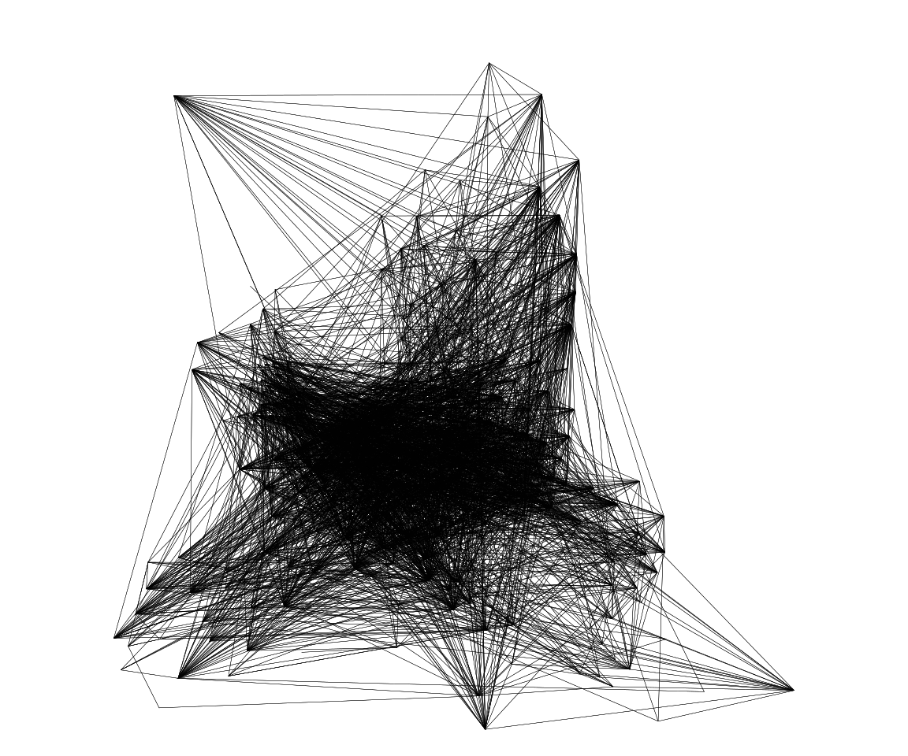
# Affichage de couches d'habillage
plot(nuts0.spdf, border = NA, col = NA, bg = "#A6CAE0")
plot(world.spdf, col = "#E3DEBF", border=NA, add=TRUE)
plot(nuts2.spdf, col = "#D1914D",border = "grey80", add=TRUE)
# Cartographie des liens
gradLinkLayer(spdf = twincities.spdf, df = twincities, #
spdfids = "i", spdfide = "j", dfids = "i", dfide = "j",
var = "fij",
breaks = c(2,5,15,20,30),
lwd = c(0.1,1,4,10),
col = "#92000090",
legend.pos = "right", legend.frame = TRUE,
legend.title.txt = "Number of Agreements\n(regional level)",
add = TRUE)
# Ajout des titres, légende, sources, etc.
layoutLayer(title = "International Twinning Agreements Between Cities",
author = "cartography",
sources = "Sources: Adam Ploszaj & Wikipedia, 2011",
scale = NULL, south = TRUE, frame = TRUE, col = NA,
coltitle = "black")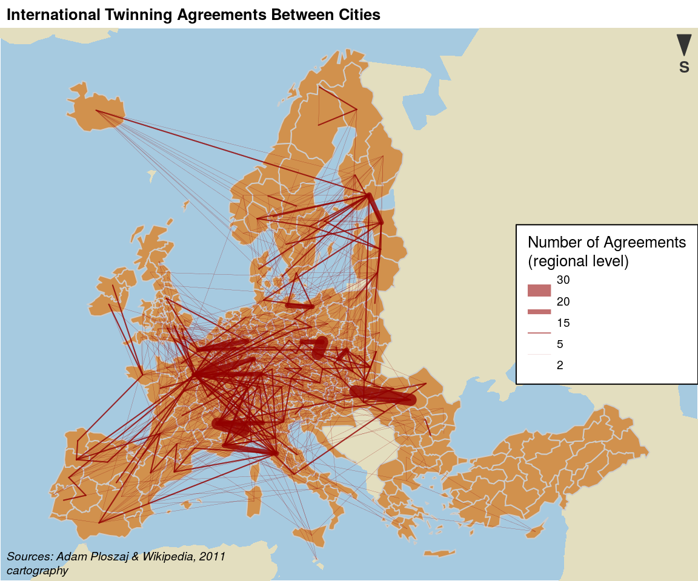
Discontinuités
# Construction les polylignes des frontières inter-étatiques
nuts0.contig.spdf <- getBorders(nuts0.spdf)
plot(nuts0.spdf, bg = "#A6CAE0", col = "#D1914D",border = "grey80")
plot(nuts0.contig.spdf, col = 1:nrow(nuts0.contig.spdf), lwd = 2, add=TRUE)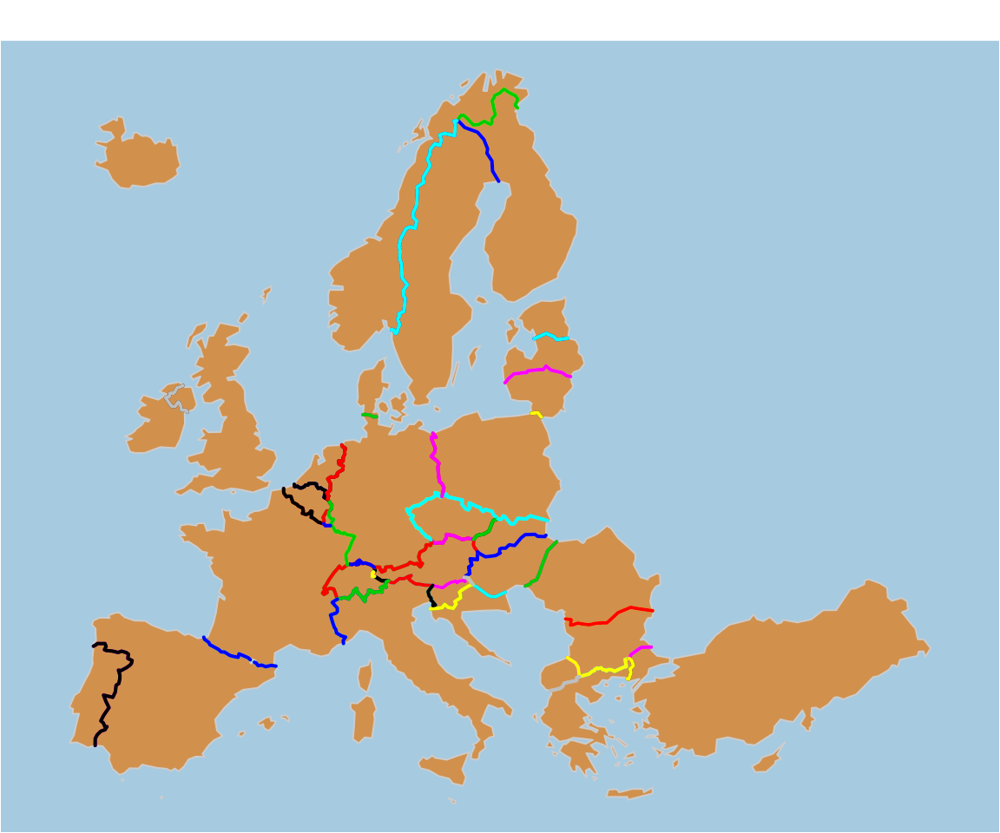
head(nuts0.contig.spdf@data) id id1 id2
AT_CH AT_CH AT CH
AT_CZ AT_CZ AT CZ
AT_DE AT_DE AT DE
AT_HU AT_HU AT HU
AT_IT AT_IT AT IT
AT_LI AT_LI AT LI# Calcul du PIB/habitant
nuts0.df$gdpcap <- nuts0.df$gdppps2008/nuts0.df$pop2008*1000000
# Affichage de couches d'habillage
plot(nuts0.spdf, border = NA, col = NA, bg = "#A6CAE0")
plot(world.spdf, col = "#E3DEBF", border=NA, add=TRUE)
# Cartographie du PIB/habitants
choroLayer(spdf = nuts0.spdf, df = nuts0.df, var = "gdpcap", #
border = "grey80",
col = carto.pal(pal1 = "kaki.pal", n1 = 6),
method = "quantile",
nclass = 6, add=TRUE,
legend.pos = "right",
legend.values.rnd = -2,
legend.title.txt = "GDP per Capita\n(in euros)")
# Plot discontinuities
discLayer(spdf = nuts0.contig.spdf, df = nuts0.df, var = "gdpcap",
type = "rel",
method = "equal",
nclass = 4,
threshold = 0.5,
sizemin = 0.5,
sizemax = 6,
col="red",
legend.values.rnd = 1,
legend.title.txt = "Discontinuities in \nGDP per Capita\n(relative)",
legend.pos = "topright",
add=TRUE)
# Ajout des titres, légende, sources, etc.
layoutLayer(title = "Wealth Disparities in Europe",
coltitle = "black", col = NA,
sources = "Eurostat, 2011",
scale = NULL,
author = "cartography",
frame = FALSE)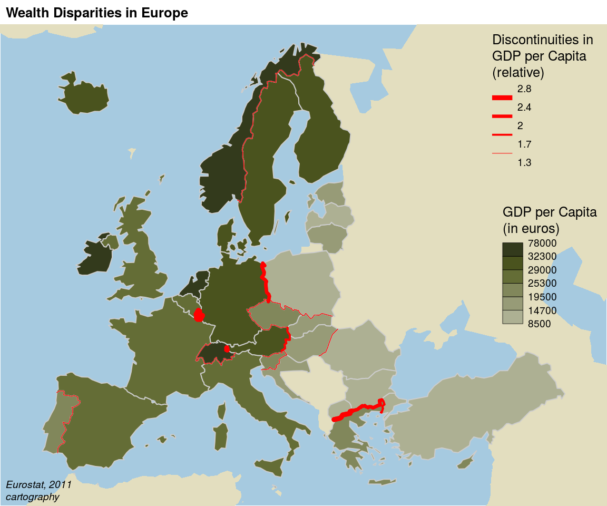
Carroyages
# Creation d'une grille régulière
mygrid <- getGridLayer(spdf=nuts2.spdf, cellsize = 200000)
# Affichage de la grille
plot(mygrid$spdf)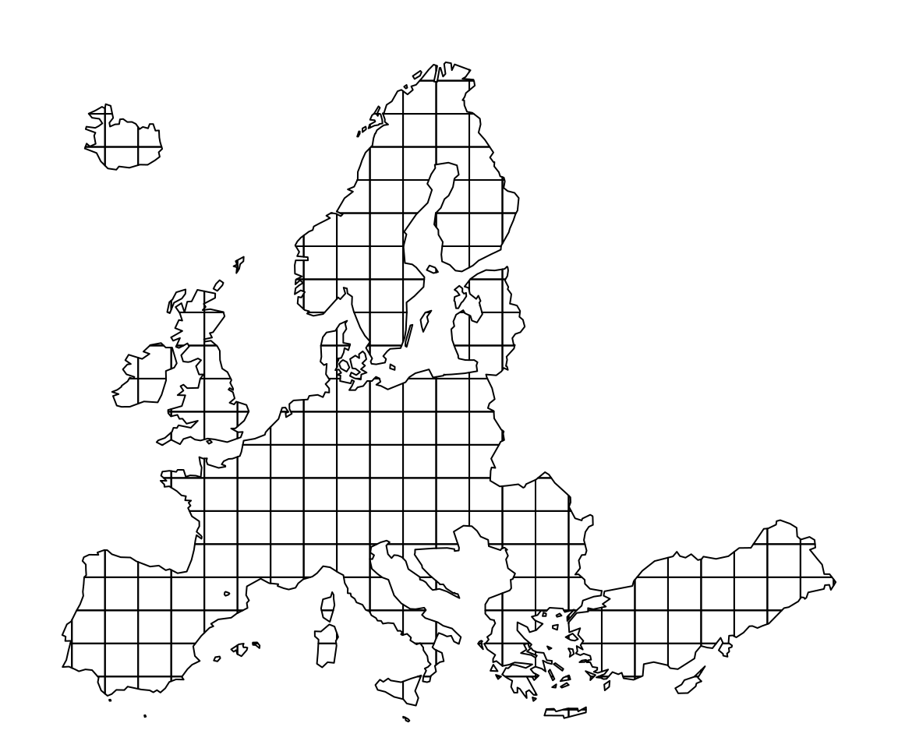
# Adaptation des données à la grille
datagrid.df <- getGridData(x = mygrid, df = nuts2.df, var = "pop2008")
datagrid.df$densitykm <- datagrid.df$pop2008_density*1000*1000
# Affichage de couches d'habillage
plot(nuts0.spdf, border = NA, col = NA, bg = "#A6CAE0")
plot(world.spdf, col = "#E3DEBF", border=NA, add=TRUE)
# Cartographie de la densité de population
choroLayer(spdf = mygrid$spdf, #
df = datagrid.df,
var = "densitykm",
border = "grey80",
col = carto.pal(pal1 = "wine.pal", n1 = 6),
legend.pos = "topright",
method = "q6", add = TRUE,
legend.title.txt = "Population Density\n(inhabitant/km²)")
# Ajout des titres, légende, sources, etc.
layoutLayer(title = "Population Density",
coltitle = "black", col = NA,
sources = "Eurostat, 2011", scale = NULL,
author = "cartography", frame = FALSE)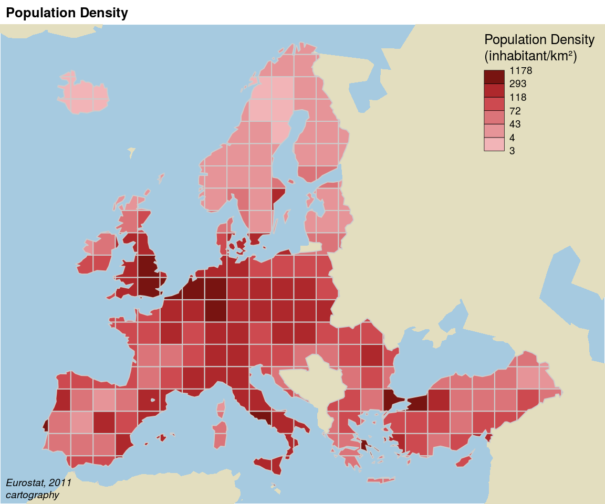
Cartes lissées
# Affichage de couches d'habillage
plot(nuts0.spdf, border = NA, col = NA, bg = "#A6CAE0") #
plot(world.spdf, col = "#E3DEBF", border = NA, add = TRUE)
nuts3.df$gdppps2008 <- nuts3.df$gdppps2008 * 1e+06
# Cartographie des potentiels de PIB/Hab
smoothLayer(spdf = nuts3.spdf, df = nuts3.df, var = "gdppps2008", var2 = "pop2008",
span = 75000, beta = 2, mask = nuts0.spdf, legend.title.txt = "Potential\nGDP per capita",
add = TRUE, legend.pos = "topright", legend.values.rnd = -2)
# Ajouter un court text sur la carte
text(x = 6271272, y = 3743765, labels = "Distance function:\n- type = exponential\n- beta = 2\n- span = 75 km",
cex = 0.8, adj = 0, font = 3)
# Ajout des titres, légende, sources, etc.
layoutLayer(title = "Wealth Inequality in Europe", sources = "Basemap: UMS RIATE, 2015 - Data: Eurostat, 2008",
author = "T. Giraud, 2015")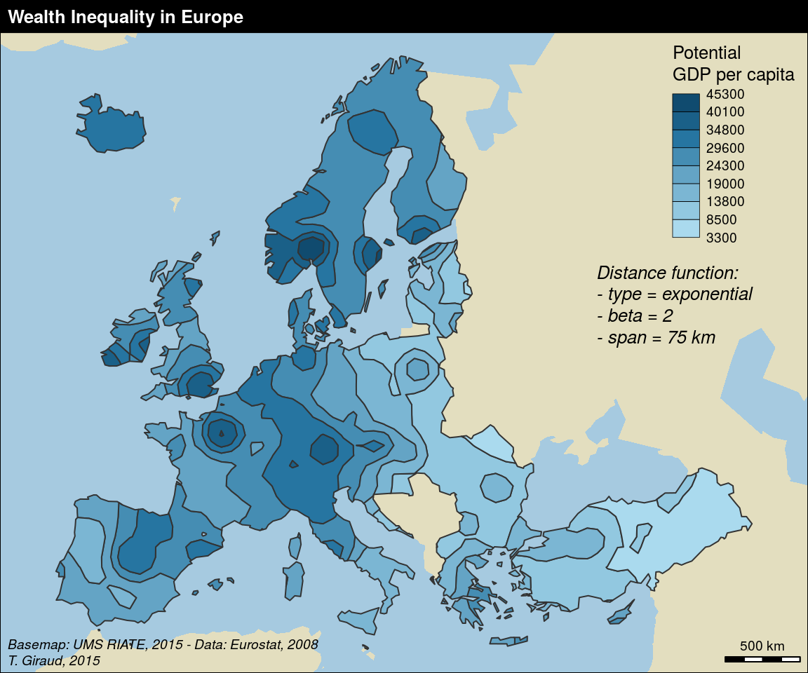
Fonds de carte OpenStreetMap
data("nuts2006")
# extract Denmark
spdf <- nuts0.spdf[nuts0.spdf$id == "DK", ]
# Download the tiles, extent = Denmark
den <- getTiles(spdf = spdf, type = "osmtransport", crop = TRUE, zoom = 7)
class(den)[1] "RasterBrick"
attr(,"package")
[1] "raster"# Plot the tiles
tilesLayer(den)
# Plot countries
plot(spdf, border = "red", lwd = 2, add = TRUE)
# Map tiles sources
mtext(text = "Map data © OpenStreetMap contributors, under CC BY SA.", side = 1,
adj = 0, cex = 0.7, font = 3, line = -2)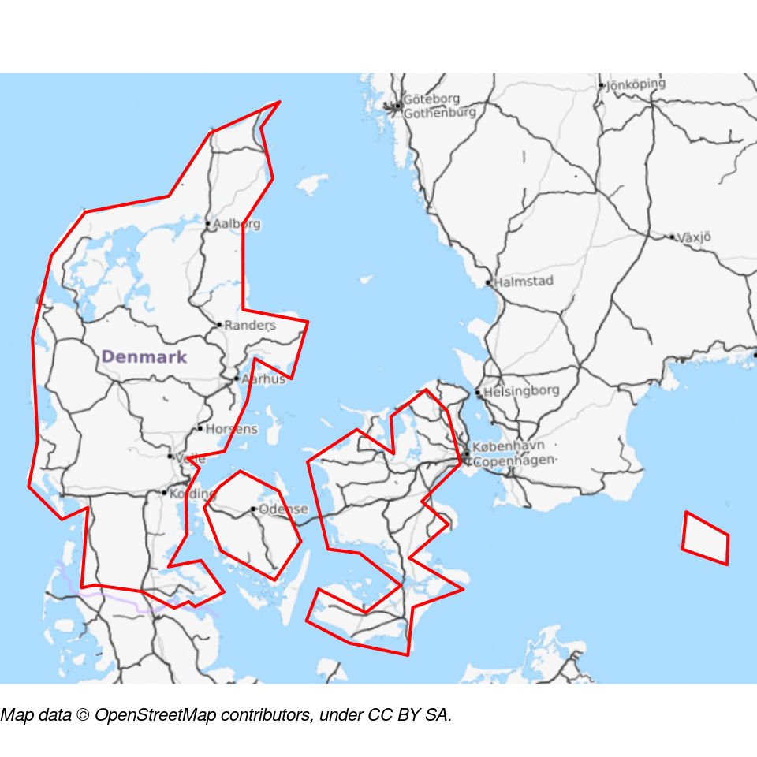
Quelques ressources en ligne
- R-sig-Geo Mailing list R Special Interest Group on using Geographical data and Mapping.
Mailing list dédiée aux discussions sur l’utilisation des packages et données géographiques dans R
- CRAN Task View: Analysis of Spatial Data
Suivi des packages portant sur l’analyse des données spatiales. - R-bloggers
Agrégateur de blogs sur R, généraliste mais les post géographiques sont assez fréquents.
- Bivand, R.S., Pebesma, E.J., and Gomez-Rubio, V. (2013). Applied spatial data analysis with R. 2nd ed. New York: Springer-Verlag.
Ouvrage de référence sur l’analyse de données spatiales avec R.
- Le Groupe ElementR
Les activités de ce groupe consistent à organiser des séances de formation et à produire des matériaux pédagogiques sur l’utilisation du logiciel R en sciences humaines et sociales. Exemples de séances :- Recherche reproductible et création de packages
- Régression multiniveaux
- Analyse de flux et modèles gravitaires
- Analyse de données spatio-temporelles
- Cartographie de flux
- Créer des applications interactives avec R et shiny
- Analyse de rasters
- Extraction de contenus web - web scraping
- Recherche reproductible et création de packages
- ElementR, G. (2014). R et espace: traitement de l’information géographique. Framasoft.
Ouvrage du Groupe ElementR.
- Lambert, N., Zanin, C. (2016). Manuel de cartographie - Principes, méthodes, applications. Armand Colin.
Manuel de cartographie.
Merci de votre attention!
Le package sur GitHub : https://github.com/Groupe-ElementR/cartography/
Carnet de recherche R Géomatique : http://rgeomatic.hypotheses.org/
Cette présentation : http://wukan.ums-riate.fr/FOSS4G-fr-2016/FOSS4G-fr-2016.html